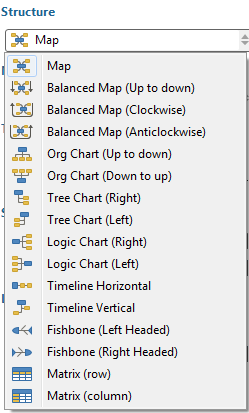

Structure
XMind has 16 types of map and chart structures that you can apply. You can easily change not only the whole map's structure, but also branch's. Here's how:
To change the Map's Structure:- Select "Central Topic"
- Open "Properties View" via "Window - Properties" from menu.
- Choose the desired structure in the drop-down structures list.

To change a Branch's Structure:- Select the Branch Root Topic.
- Open Properties View.
- Choose the desired structure in the drop-down structures list.
Note:
- You can use multiple structures in one map, such as spreadsheet for the whole map and fishbone for one cell topic, and Org Chart for another cell topic.
- The Branch Topic can be a main topic, subtopic, or floating topic.
You can follow these steps to change some settings of your map:
- Select map by clicking on any blank place on the map.
- Open Properties View.
- Change 'Background Color'
- Select Wallpaper.
- Advanced: Check/uncheck boxes for 'Multi-colored Branch' and 'Tapered Lines'.
- Legend: Check/uncheck 'show legend'.
Map Navigation
Arrow keys can bring you to any topic in the map. You can also zoom in/out the map easily in two ways below:
- Use the mini-toolbar below the map editor to zoom the map.

- Use the shortcut: Ctrl + Mouse Wheel to scroll (Use Command on Mac).